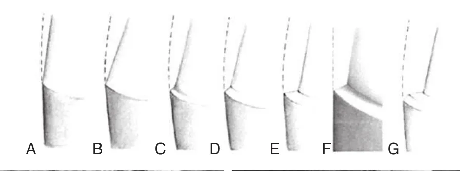

نسخه استخراجشده؛ ترجمه یا تأیید علمی انجام نشده است. وضعیت: captured
قاعدهی پایه، همان قاعدهی یونیت ۲.۳ است: «هر وقت ممکن باشد، لبهی تراش باید بالای لثه باشد.» و دو مزیت اجرایی: «لبههای بالای لثه آسانتر و بدون ترومای بافت نرم بهدقت تراشیده میشوند و قالبگیری یا اسکن نوری را تسهیل میکنند. معمولاً میتوانند روی مینای سخت هم قرار گیرند، در حالی که لبههای زیرلثهای اغلب روی عاج یا سمان قرار میگیرند.»
و پنج اندیکاسیون لبهی زیرلثهای — این فهرست را حفظ کن:
و جدا از این پنج مورد، اصلاح کانتور محوری هم اندیکاسیون دارد — مثلاً برای «فراهم کردن یک آندرکات برای گیر کلاسپ پروتز پارسیل متحرک».
و دقت لبه — عددی که همیشه محل بحث بوده: «هرچند عدد دقیقی برای عرض قابل قبول گپ لبهای شناخته نشده است، مقالات دیدگاهی بازهای از ۴۰ تا ۱۲۰ میکرومتر را برقرار کردهاند.»
و آنچه یک تکنسین ماهر میتواند بسازد: ریختگیهایی که تا ۱۰ میکرومتر جا میافتند و لبههای پرسلنی که تا ۵۰ میکرومتر جا میافتند — «به شرط آنکه دندان بهدرستی تراشیده شده باشد». یعنی سقف دقت را تراش تو تعیین میکند، نه لابراتوار.
و چرا صافی لبه اهمیت دارد: «اتصالهای خشن، نامنظم یا «پلهای» میان دندان و ترمیم، طول کلی لبه را بهشدت افزایش میدهند و دقت تطابق ترمیم را بهطور معنادار کاهش میدهند.»
و این نکته را جدی بگیر: «اهمیت بالینی تراشیدن لبههای صاف را نمیتوان بیش از حد تأکید کرد. زمان صرفشده برای به دست آوردن لبههای صاف، مراحل بعدی — جابهجایی بافت، قالبگیری، ارتباط با لابراتوار، ساخت دای، واکسآپ و پرداخت — را بسیار آسانتر میکند و در نهایت به ترمیمهای ماندگارتر میانجامد.»
و یک نکتهی مختص CAD-CAM: «تراشها باید شکل و قطر فرزهایی که ترمیم سرامیکی را میتراشند در نظر بگیرند. تراشهای با زوایای خط تیز، به ترمیمهایی با سطوح داخلی بیشتراشیده میانجامند. بیشتراشی طبیعتاً به گپهای سمانی داخلی بزرگ منجر میشود.»

۱. فِدِر-اِج (لبهی پَری): «یک اثر آستین عمودی میان دندان و ترمیم بدون هیچ شلف افقی» میسازد. «هرچند بسیار محافظهکارانه نسبت به ساختار دندان است»، کاربرد بالینیاش محدود بوده چون یا حجم کافی ماده فراهم نمیکند یا پروفایل خروج پرکانتور میسازد.
و دادههای بالینی که تصویر را پیچیدهتر میکنند: یک کارآزمایی تصادفی ۴ ساله روی روکشهای زیرکونیای مونولیتیک تکی، فِدِر-اِج و چمفر را مقایسه کرد: «دو فینیشلاین هندسی تفاوت معناداری در بقا و موفقیت بالینی نداشتند. با این حال، روکشهای زیرکونیا با لبهی فِدِر احتمال بالاتری از خونریزی هنگام پروب نسبت به طراحی چمفر داشتند.» و یک مطالعهی گذشتهنگر ۹ ساله روی روکشهای لیتیومدیسیلیکات تکی با لبهی فِدِر، «نرخ شکست بالینی پایین ۱٫۸ درصد» نشان داد.
و یک واریانت مهم: «تکنیک تراش زیستمحور (BOPT)» — شکلی هندسی که دندان را به فرم همگرا بدون فینیشلاین میتراشد (فِدِر مارجین اصلاحشده). کارآزمایی تصادفی نشان داد FPDهای سهواحدی زیرکونیای خلفی روی تراشهای زیستمحور «نرخ بقای بالا و اندکس لثهای پایین پس از ۵ سال» دارند.
۲. چیزل-اِج: واریانتی از فِدِر-اِج که «وقتی زاویهی میان سطوح محوری و ساختار دندانی تراشنخورده بزرگتر باشد» شکل میگیرد. متأسفانه «این لبه غالباً با تراشهای با زوایای همگرایی (تیپر) بیش از حد و تراشهایی که جهت کاهش محوریشان با محور طولی دندان درست همتراز نیست همراه است».
۳. چمفر: «مناسبترین ابزار برای ساختن لبهی چمفر احتمالاً یک الماسی تورپیدو-شکل با نوک گرد است؛ لبهی حاصل پروفایل دقیق ابزار است.» و «دقت لبهای به داشتن یک الماسی باکیفیت و هندپیس بدون لرزش بستگی دارد».
۴. بِوِل — و سه هدفش: «(۱) اجازه دادن به لبهی فلزی ریختگی که خم یا برنیش شود؛ (۲) به حداقل رساندن اختلاف لبهای ناشی از روکشی که کاملاً نمینشیند؛ و (۳) محافظت ساختار تراشنخوردهی دندان از لبپریدگی — مثلاً با برداشتن مینای بدون حمایت.»
و عددی که اثرش را کمّی میکند: «اگر مقطع داخلی روکش برابر یا کمتر از دندان تراشیدهشده باشد، یک بِوِل ۴۵ درجه اختلاف لبهای را ۷۰ درصد کاهش میدهد. اگر قطر داخلی کمی بزرگتر از دندان تراشیدهشده باشد، بِوِل زدن اختلاف لبهای را افزایش میدهد.» و در عمل، روکشها کمی بزرگتر ساخته میشوند تا جا برای سمان باشد.
و یک هشدار عملی: «وقتی دسترسی برای برنیش کردن محدود است، مزیت اندکی در بِوِل زدن هست. این بهویژه دربارهی لبهی لثهای صدق میکند، جایی که بِوِل زدن به امتداد زیرلثهای تراش یا قرار گرفتن لبه روی عاج بهجای مینا میانجامد.»
۵. شولدر: «چون جا برای پرسلن و آلیاژ میدهد، برای بخش فاسیال روکشهای متالسرامیک توصیه میشود، بهویژه وقتی تکنیک لبهی پرسلنی بهکار میرود. باید زاویهی ۹۰ درجه با سطح تراشنخوردهی دندان بسازد. زاویهی حاده احتمالاً لب میپرد.» و در عمل، «دندانپزشکان تمایل دارند شولدر فاسیال را کمتراش کنند» که به ترمیمهایی با زیبایی نازل یا کانتور محوری بیش از حد میانجامد. واریانت آن، شولدر شیبدار ۱۲۰ درجه، گاهی بهجای شولدر ۹۰ درجه برای لبهی فاسیال متالسرامیک به کار میرود: احتمال جا ماندن مینای بدون حمایت را کم میکند و باز هم حجم کافی برای نازک کردن فلز تا لبهی چاقویی میگذارد.
۶. شولدر بِوِلدار: برای سطح فاسیال ترمیم متالسرامیک وقتی کالر فلزی برنامهریزی شده. «بهویژه برای ترمیم دندانهای قدامی ساختاراً بهخطرافتاده که فینیشلاین شولدر بزرگ موجود و اثر فرول حداقلی دارند مفید است»: شولدر موجود در تراش گنجانده میشود ولی «یک بِوِل زیرلثهای روی سطح ریشه گذاشته میشود تا اثر فرول افزایش یابد».
و عیبش: «باید عمیقتر در سولکوس لثهای قرار گیرد تا نوار پهنتر فلز پنهان شود.» به همین دلیل «وقتی ساختار دندانی در دسترس است، شولدر یا شولدر شیبدار به دلایل زیبایی ترجیح دارد» — چون کوپینگ فلزی میتواند تا لبهی چاقویی نازک شود و در سولکوس پنهان گردد بدون آنکه لبه به اتصال اپیتلیالی نزدیکتر شود.
و اعداد عرض لبه بر حسب ماده — این فهرست را به خاطر بسپار:
و یک قاعدهی مصالحه که کمتر گفته میشود: «وقتی دندانها با تیپر افزایشیافته تراشیده شدهاند، توصیه میشود عرض لبه کاهش یابد تا ضخامت کافی عاج میان دیوارهی محوری و بافت پالپی حفظ شود.»
و نتیجهگیری مروری: «طراحی لبه باید بر پایهی نوع روکش، الزامات زیبایی، سهولت ساخت و تجربهی اپراتور انتخاب شود. پژوهش، انتظارِ تطابق بهتر مرتبط با انتخاب انواع خاصی از هندسهی فینیشلاین را تأیید نکرده است.»